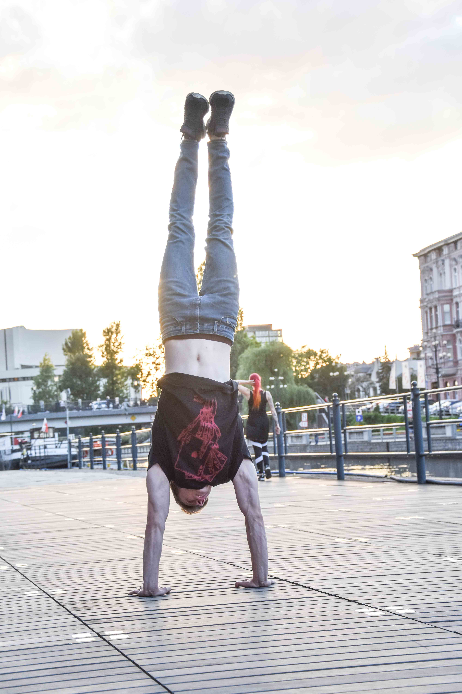

JAK NUCZYĆ SIĘ STAĆ NA RĘKACH?
JAK STAĆ NA RĘKACH ( Handstand ) - TECHNIKA?
Żeby stanąć na rękach co najważniejsze trzeba ciągle próbować, lecz starać się w każdej próbie doskonalić swoją technikę, przez spięcie pośladków, wciągnięcie brzucha, szerokie ułożenie palców u rąk i ściągnięcie placów u nóg.
JAK ZACZĄĆ STAĆ NA RĘKACH?
Stanie na rękach możemy zacząć od frogstanda i elbow lever'a, dzięki którym oswoimy się z strachem i opanujemy równowagę. Później po opanowaniu tych elementów zaczynamy wzmacniać nasze barki przez np. pompki na barki lub jak już mamy dostateczną siłę w barkach to próbujemy stać przy ścianie na rękach przodem i tyłem a także chodzić na rękach i na końcu odbijać się od ściany nogami i łapać równowagę. Jak już nauczymy się stać parę sekund na rękach bez ściany to zaczynamy korygować naszą sylwetkę w staniu na rękach na początku przy ścianie, odbijając się nogami próbujemy wejść do poprawnej sylwetki w staniu na rękach.
POMPKI W STANIU NA RĘKACH.
Jak już czujemy siłę w naszych barkach i rękach to możemy przejść po mału do pompek handstandzie przy ścianie. Na początek ustawiamy nasze palce bardzo szeroko, następnie wchodzimy do handstanda gdzie ręce ustawiamy na około 10 cm od ściany, możemy dać ręce trochę szerzej niż tłow, będzie nam wtedy łatwiej wykonać pompki. Jak schodzimy na dół w pompce to dotykamy czołem podłogi i wchodzimy do góry, gdzie następuje wypięcie klatki do przodu, jest to poprawny ruch w pompce w staniu na rękach.
JAK NAUCZYĆ SIĘ POMPEK NA RĘKACH.
Pompki w handstandzie, zawsze pokazywały prawdziwą siłę, lecz opanowanie ich nie jest aż takie trudne jak się wydaje. Na początek trzeba umieć stać na rękach a później przez ćwiczenia typu push wzmocnić nasze barki i ręce, np. przez pompki na barki, pompki w wychyleniu, czy nawet same próby pompki w staniu na rękach dają pożądane rezultaty.
WARIACJE W STANIU NA RĘKACH.
Jest wiele wariacji w staniu na rękach poniżej macie parę zdjęć przykładowych, niech to będzie dla was motywacja żeby trenować 💪
{kind=link}
{kind=link}
{kind=link}
PODSUMOWANIE.
Ciągle próby i świadomość techniki pozwala nam opanować stanie na rękach. Technika: Spięte pośladki, wciągnięty brzuch, szeroko palce u rąk, ściągnięte palce u stóp, wypięcie klatki piersiowej do przodu. Ćwiczenia progresywne: pompki na barki, pompki w wychyleniu, próby, frogstand, handstand Pompki w staniu na rekach: na początku uczymy się pompek przy ścianie, schodzimy na dół dotykamy czułem i wracamy z wypięciem klatki Ćwiczenia do pompki w staniu na rękach: pompki na barki, pompki w wychyleniu i co najważniejsze próby.